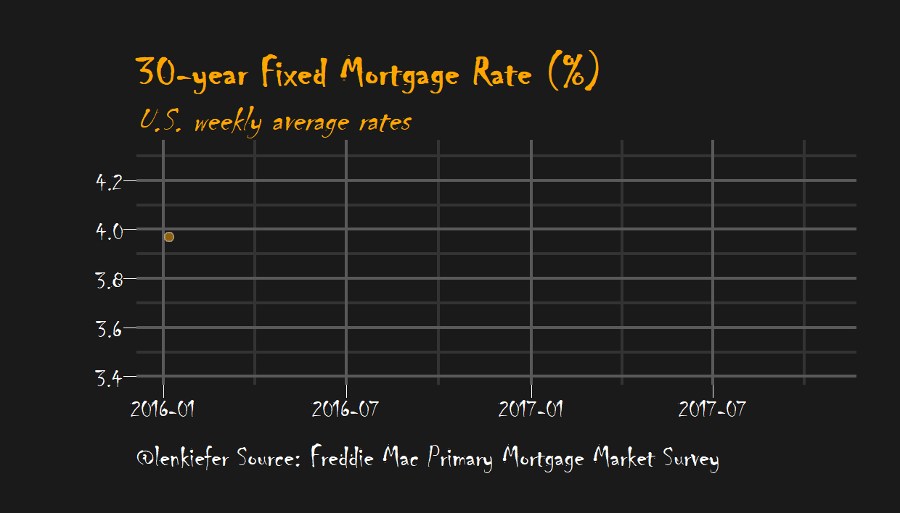

MORTGAGE RATES ARE LOW IN THE UNITED STATES. How low? Let’s take a look.
We’ll use R to plot a few visualizations of mortgage rates. We’ll also try out some of the nice features in the tibbletime package that help when working with time series data. For more on using tibbletime see this post and this one on making animated plots.
Since I was already called out for alleged chartcrimes, I’m going to go ahead and let loose here. We’ll go back to my dark theme. Halloween is getting close, if we modify our dark theme suitably we can have a spooky graph like this:

Data
We’ll get our mortgage rates data via the Saint Louis Federal Reserve’s FRED database. And if you followed my post from back in April you know what we can do if we combine FRED with the quantmod package. It gets even easier if we use tidyquant like we did here.
#####################################################################################
## Load libraries ##
#####################################################################################
library(tidyverse)
library(readxl)
library(tidyquant)
library(tibbletime)
library(ggridges)
library(viridis)
library(cowplot)
library(ggbeeswarm)
#####################################################################################
## Get mortgage data ##
# Can also get direct here: http://www.freddiemac.com/pmms/docs/historicalweeklydata.xls
#####################################################################################
df<- tq_get("MORTGAGE30US",get="economic.data",from="1971-04-01")
knitr::kable(tail(df))| date | price |
|---|---|
| 2017-09-14 | 3.78 |
| 2017-09-21 | 3.83 |
| 2017-09-28 | 3.83 |
| 2017-10-05 | 3.85 |
| 2017-10-12 | 3.91 |
| 2017-10-19 | 3.88 |
The variable price corresponds to the U.S. weekly average 30-year fixed mortgage rate in percentage points based on the Primary Mortgage Market Survey. Note: I work on the survey but the reflections here only represent my own views.
Time aggregations with tibbletime
Now that we have our data, let’s use tibbletime to wrangle a bit.
df <- as_tbl_time(df,index=date) %>%
mutate(year=year(date),
decade=paste0(year -year %% 10,"'s") # make decade variable
)
# summarize by month:
df.month <-
df %>% time_summarise(period = 1~m,
price=mean(price))
# summarize by year:
df.year<-
df %>% time_summarise(period = 1~y,
price=mean(price))
# summarize by decade:
df.d<-
df %>% mutate(d2=date) %>%
time_summarise(period = 10~y,
price=mean(price),
range=paste(year(min(d2)),year(max(d2)),sep="-"),
start_date="1970-01-01")
knitr::kable(df.d %>% mutate_if(is.numeric,round,2))| date | price | range |
|---|---|---|
| 1979-12-28 | 8.90 | 1971-1979 |
| 1989-12-29 | 12.71 | 1980-1989 |
| 1999-12-31 | 8.12 | 1990-1999 |
| 2009-12-31 | 6.29 | 2000-2009 |
| 2017-10-19 | 4.06 | 2010-2017 |
Dark theme
Let’s set up our dark theme:
extrafont::loadfonts(device="win") # needed for fonts (on windows, not sure about unix/mac)
theme_dark2 = function(base_size = 10, base_family = "Courier New") {
theme_grey(base_size = base_size, base_family = base_family) %+replace%
theme(
# Specify axis options
axis.line = element_blank(),
axis.text.x = element_text(size = base_size*0.8, color = "white", lineheight = 0.9),
axis.text.y = element_text(size = base_size*0.8, color = "white", lineheight = 0.9),
axis.ticks = element_line(color = "white", size = 0.2),
axis.title.x = element_text(size = base_size, color = "white", margin = margin(0, 10, 0, 0)),
axis.title.y = element_text(size = base_size, color = "white", angle = 90, margin = margin(0, 10, 0, 0)),
axis.ticks.length = unit(0.3, "lines"),
# Specify legend options
legend.background = element_rect(color = NA, fill = " gray10"),
legend.key = element_rect(color = "white", fill = " gray10"),
legend.key.size = unit(1.2, "lines"),
legend.key.height = NULL,
legend.key.width = NULL,
legend.text = element_text(size = base_size*0.8, color = "white"),
legend.title = element_text(size = base_size*0.8, face = "bold", hjust = 0, color = "white"),
legend.position = "none",
legend.text.align = NULL,
legend.title.align = NULL,
legend.direction = "vertical",
legend.box = NULL,
# Specify panel options
panel.background = element_rect(fill = " gray10", color = NA),
#panel.border = element_rect(fill = NA, color = "white"),
panel.border = element_blank(),
panel.grid.major = element_line(color = "grey35"),
panel.grid.minor = element_line(color = "grey20"),
panel.spacing = unit(0.5, "lines"),
# Specify facetting options
strip.background = element_rect(fill = "grey30", color = "grey10"),
strip.text.x = element_text(size = base_size*0.8, color = "white"),
strip.text.y = element_text(size = base_size*0.8, color = "white",angle = -90),
# Specify plot options
plot.background = element_rect(color = " gray10", fill = " gray10"),
plot.title = element_text(size = base_size*1.2, color = "white",hjust=0,lineheight=1.25,
margin=margin(2,2,2,2)),
plot.subtitle = element_text(size = base_size*1, color = "white",hjust=0, margin=margin(2,2,2,2)),
plot.caption = element_text(size = base_size*0.8, color = "white",hjust=0),
plot.margin = unit(rep(1, 4), "lines")
)
}Now let’s make some simple bar charts.
ggplot(data=df.month, aes(x=date,y=price,fill=price))+
geom_col()+
scale_fill_viridis(option="C")+
theme_dark2()+
labs(x="",y="",title="U.S. monthly average 30-year fixed mortgage rate (%)",
caption="@lenkiefer Source: Freddie Mac Primary Mortgage Market Survey through Oct 19, 2017")
ggplot(data=df.year, aes(x=date,y=price,fill=price,label=round(price,1)))+
geom_col()+
scale_fill_viridis(option="C")+
theme_dark2()+
labs(x="",y="",title="U.S. yearly average 30-year fixed mortgage rate (%)",
caption="@lenkiefer Source: Freddie Mac Primary Mortgage Market Survey through Oct 19, 2017")
ggplot(data=df.d, aes(x=range,y=price,fill=price,label=round(price,1)))+
geom_col()+
geom_text(color="white",size=6,vjust=0.9)+
scale_fill_viridis(option="C")+
theme_dark2()+
labs(x="",y="",title="U.S. decade average 30-year fixed mortgage rate (%)",
caption="@lenkiefer Source: Freddie Mac Primary Mortgage Market Survey through Oct 19, 2017")
We might also be interested in comparing the distribution of weekly rates by year or decade. Let’s do that with a more complex plot:
# Compare distributions
g.box<-
ggplot(data=df, aes(x=decade,y=price,color=price))+
geom_quasirandom(size=1,alpha=0.5)+
geom_boxplot(color="white",fill=NA)+
guides(color=F)+
scale_color_viridis(option="C")+
theme_dark2()+
labs(x="By Decade",y="30-year fixed mortgage rate (%)",
title="\n")
g.box2<-
ggplot(data=df, aes(x=year,y=price,color=price,group=year))+
geom_quasirandom(size=1.2,alpha=0.75)+
geom_boxplot(color="gray",fill=NA)+
guides(color=F)+
scale_color_viridis(option="C")+
theme_dark2()+
labs(x="By Year",y="30-year fixed mortgage rate (%)",
title="30-year fixed mortgage rates")
g.line<-
ggplot(data=df, aes(x=date,y=price,color=price,group=year,fill=price))+
geom_point(size=1.5,color="gray",alpha=0.25,shape=21)+
geom_path(size=1.1)+
guides(color=F)+
scale_color_viridis(option="C")+
scale_fill_viridis(option="C",name="Rate (%)")+
theme_dark2()+
scale_x_date(date_breaks="5 years",date_labels="%Y")+
labs(x="By Week",y="30-year fixed mortgage rate (%)",
caption="@lenkiefer Source: Freddie Mac Primary Mortgage Market Survey")+
theme(legend.position="none",plot.caption=element_text(hjust=0))
plot_grid(plot_grid(g.box2,g.box),g.line,ncol=1)
A spooky plot
How about if we want our spooky plot? We just have to run the following. Note we can use the time-based filtering tools from tibbletime to subset our data easiy. These utitlity functions have already saved me a lot of typing.
ggplot(data=df[2015~2017], aes(x=date,y=price,fill=price))+
geom_point(data=df[2015~2017],size=2,color="gray",alpha=0.5,shape=21,fill="orange")+
geom_line(color="orange",size=0.5)+
#geom_step(color="orange", size=1.1)+
theme_dark2(base_family="Chiller",base_size=20)+
labs(x="", y="",
title="30-year Fixed Mortgage Rate (%)",
subtitle="U.S. weekly average rates",
caption="@lenkiefer Source: Freddie Mac Primary Mortgage Market Survey")+
theme(plot.title=element_text(color="orange",face="bold",family="Chiller",size=24),
panel.border=element_blank(),
plot.subtitle=element_text(color="orange",face="italic",family="Chiller",size=20),
plot.caption=element_text(hjust=0,size=18))